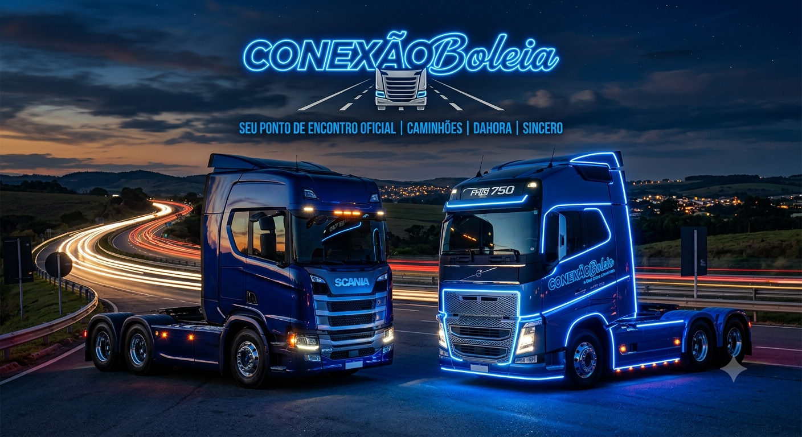

Fala galera sejam bem-vindos na ConexãoBoleia
Por: Ezequiel oliveira
Fala, galera! Sejam muito bem-vindos no meu blog!
Fala, galera! Sejam muito bem-vindos ao meu blog! Todos me chamam de Ezequiel, e criei o ConexãoBoleia — com essa vibe icônica azul escuro e azul neon — para ser o nosso ponto de encontro oficial para falar sobre caminhões de um jeito mais dahora, sincero e sem enrolação. Por aqui, vou soltar as melhores indicações, comentar sobre lançamentos de caminhões e falar a real sobre o que vamos falar aqui, então fiquem à vontade para debater nos comentários e me contar logo de cara: qual caminhão favorito de vocês?